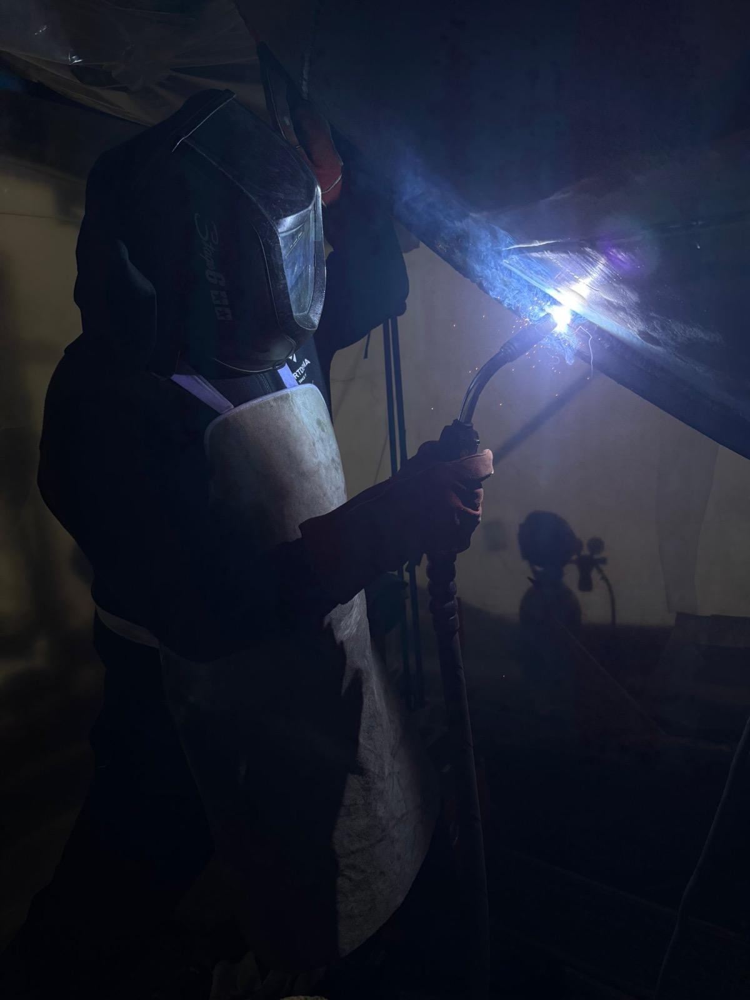

En el sector de la soldadura, la improvisación no tiene cabida; la experiencia y la certificación técnica lo son todo. Con más de dos décadas de trayectoria profesional, dominamos con absoluta precisión los cuatro procesos clave del sector: Arco (MMA), MAG, MIG y TIG.

Nuestra máxima especialización se encuentra en el ámbito de la náutica y la reparación naval. El mar no perdona los errores: los entornos salinos exigen soldaduras perfectas, herméticas y de alta resistencia estructural. Sabemos que un fallo en un componente marino puede comprometer la seguridad de una embarcación. Por ello, aplicamos el procedimiento exacto que cada metal requiere:
No nos limitamos a unir metales; garantizamos la integridad de su inversión bajo los estándares y normativas más estrictos. Veinte años de armadores, astilleros y empresas industriales satisfechas avalan nuestro compromiso con la excelencia técnica.
Confíe sus proyectos estructurales a manos expertas. Confíe en profesionales de la soldadura.
Solicitar presupuesto